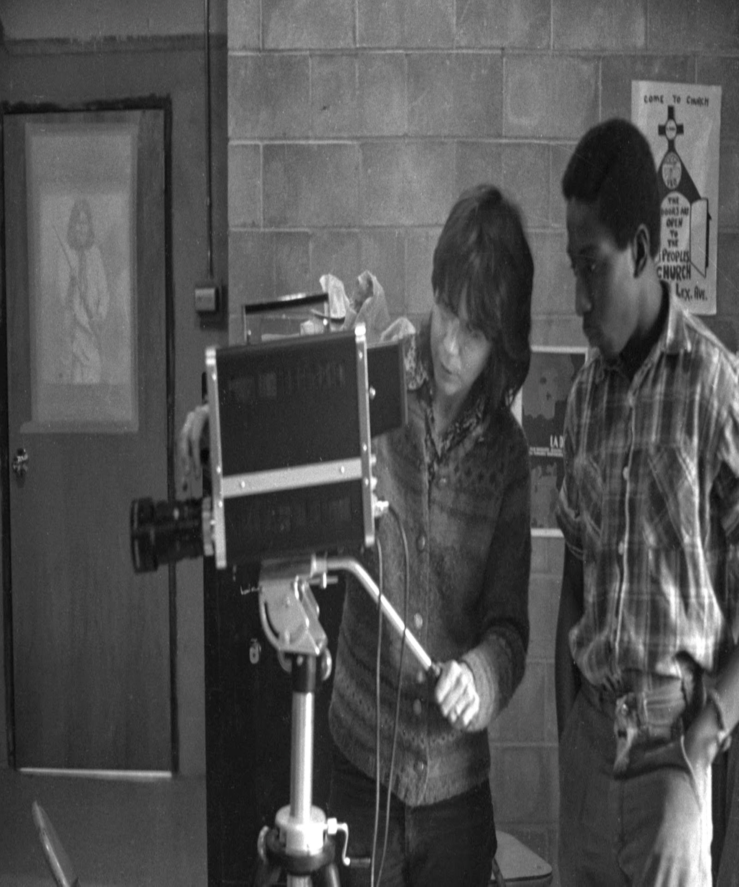
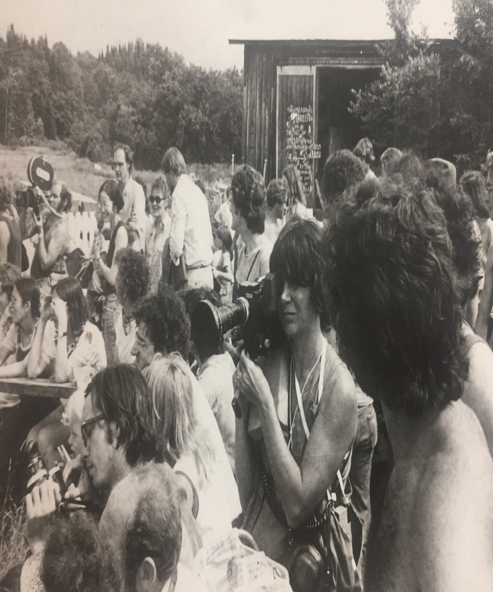
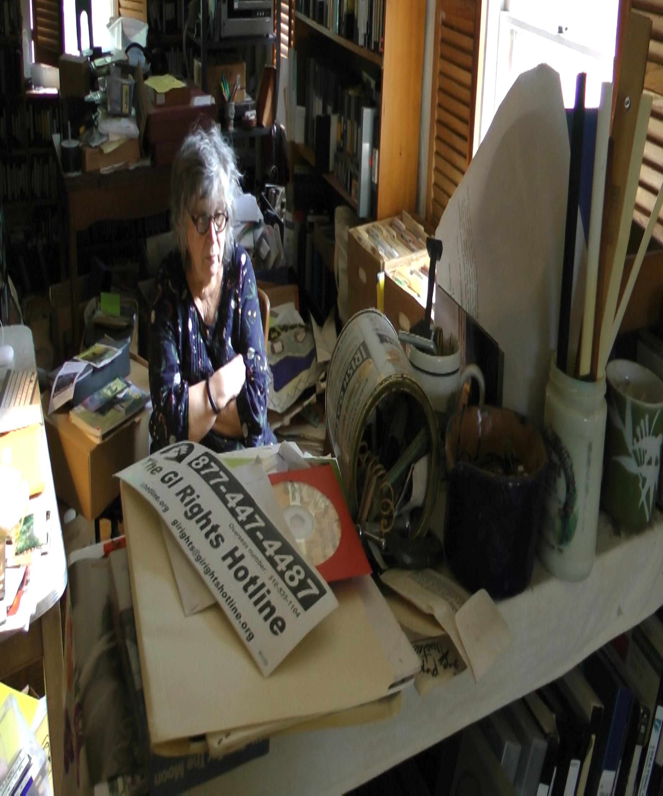

1 / 9
1943: Dee Dee at age 3
2 / 9
1957
3 / 9

1969-1973: Dee Dee teaching video camera otisville 1969-1973
4 / 9

1974: Dee Dee Filming 16mm at Bread and Puppet Plainfield VT
5 / 9

1981: Paper Tiger Television
6 / 9
1986: Deep Dish Television
7 / 9

2011: Waves of Change
8 / 9

2016: Studio Great Frame
9 / 9
2018